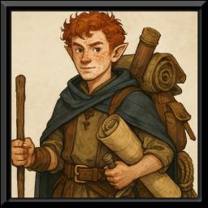

Brennar Tallowick
Lightfoot Halfling · Artificer 2 / Vital Cartographer 1 · Artisan
Companion
Tempest Company
Cartographer
Fantasy Grounds Character Record
STR
8
8
DEX
13
13
CON
10
10
INT
14
14
WIS
12
12
CHA
12
12
Mechanical Snapshot
Level 3 overall: Lightfoot Halfling, Artisan background. Classes on the sheet: Artificer 2 and Vital Cartographer 1.
Defenses
13 HP · AC 12 · Speed 25 · Initiative +1 · Proficiency +2 · Size Small · Perception 11
Kit (names)
Tallowick's Cartographer's Tools, Heward's Handy Haversack, Ring of Repose, Ring of Sustenance, T. TeaLeaf's Journal, Hand Crossbow, Leather Coat. Features include Mapping Instinct, Keen Cartographer, Magical Tinkering, Spellcasting, Infuse Item.
Companion record — present with the company, not a standard party PC dossier. More story when discovery is ready.